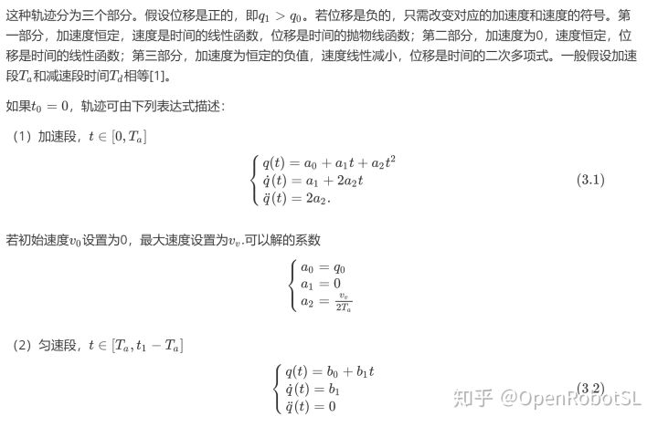
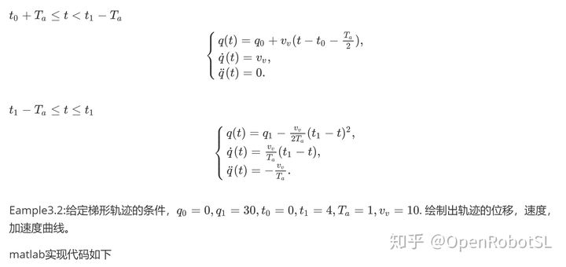
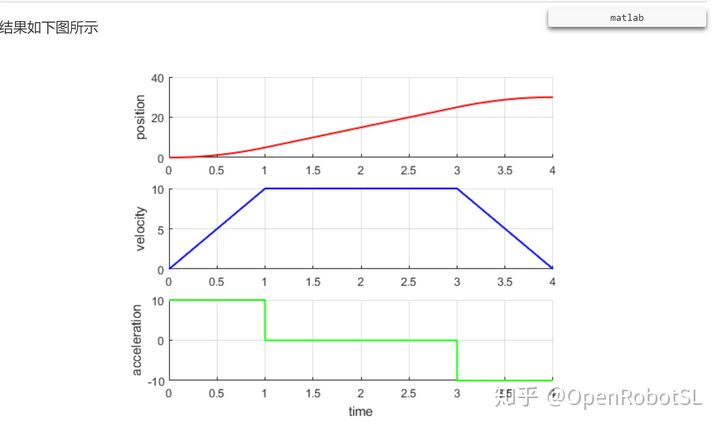
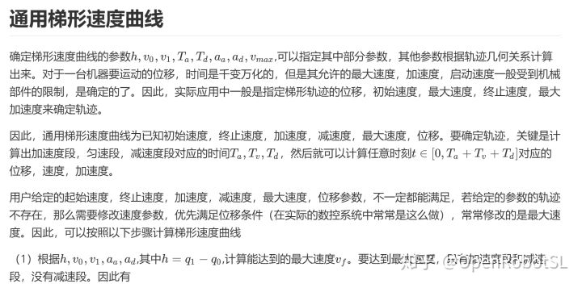
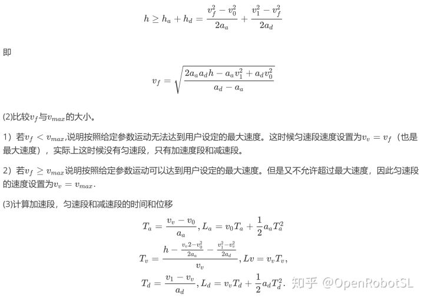
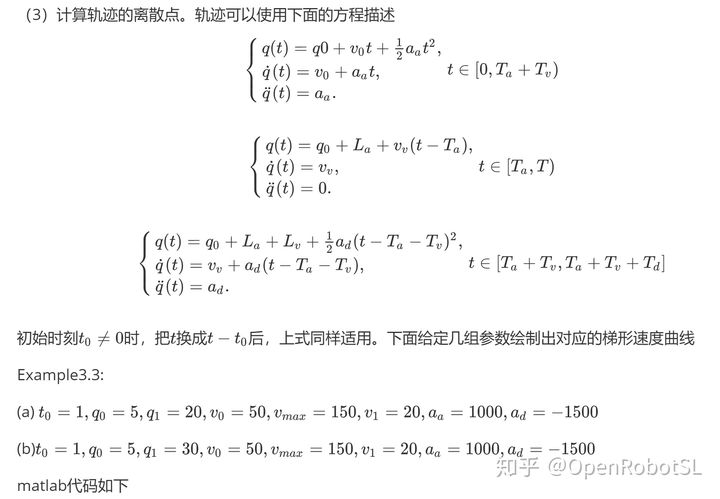
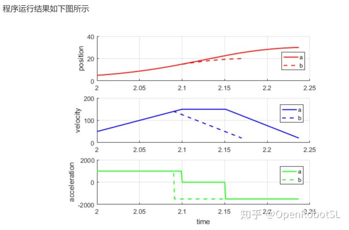

Home
获取连续速度曲线的常用的方法是使用带有抛物线过渡的线性轨迹，这就是典型的梯形速度曲线。



%{
使用抛物线过渡线性轨迹,example3.2
Brian
2018-12-22,
%}
close('all')
clc
clear
%%
%已知轨迹给定条件
q0=0;
q1=30;
t0=0;
t1=4;
Ta=1;
Vv=10;
%%
%计算轨迹的离散点
i=1;
Ts=0.001;
for t=t0:Ts:t1
time(i)=t;
if(t0 <=t && t<t0+Ta)
q(i)=q0+Vv/(2.0*Ta)*(t-t0)^2;
dq(i)=Vv/Ta*(t-t0);
ddq(i)=Vv/Ta;
end
if(Ta <=t && t<t1-Ta)
q(i)=q0+Vv*(t-t0-Ta/2.0);
dq(i)=Vv;
ddq(i)=0;
end
if(t1-Ta<=t&&t<=t1)
q(i)=q1-Vv/(2.0*Ta)*(t1-t)^2;
dq(i)=Vv/Ta*(t1-t);
ddq(i)=-Vv/Ta;
end
i=i+1;
end
%%
%设置绘图布局
figure
fig1=subplot(3,1,1);
ylabel('position');
grid on
hold on
fig2=subplot(3,1,2);
ylabel('velocity');
grid on
hold on
fig3=subplot(3,1,3);
ylabel('acceleration');
xlabel('time');
grid on
hold on
%绘图
c1=plot(fig1,time,q,'-r','LineWidth',1.5);
c2=plot(fig2,time,dq,'-b','LineWidth',1.5);
c3=plot(fig3,time,ddq,'-g','LineWidth',1.5);
%end



%{
一般的抛物线过渡线性轨迹（梯形速度曲线）,example3.3
Brian
2018-12-23,
%}
% close('all')
clc
clear
%给定的轨迹参数
t0=2;
q0=5;
q1=20;
v0=50;
v1=20;
vmax=150;
aa=1000;
ad=-1500;
%%
%设置绘图布局
fig1=subplot(3,1,1);
ylabel('position');
grid on
hold on
fig2=subplot(3,1,2);
ylabel('velocity');
grid on
hold on
fig3=subplot(3,1,3);
ylabel('acceleration');
xlabel('time');
grid on
hold on
h=q1-q0;
%确定最大速度
vf=sqrt((2*aa*ad*h-aa*v1^2+ad*v0^2)/(ad-aa));
if(vf>vmax)
Vv=vmax;
else
Vv=vf;
end
%计算加速和减速段时间
Ta=(Vv-v0)/aa;
La=v0*Ta+1.0/2.0*aa*Ta^2;
Td=(v1-Vv)/ad;
Ld=Vv*Td+1.0/2.0*ad*Td^2;
Tv=(h-(Vv^2-v0^2)/(2.0*aa)-(v1^2-Vv^2)/(2.0*ad))/Vv;
Lv=h-La-Ld;
%计算轨迹的离散点
Ts=0.001;
j=1;
for t=t0:Ts:t0+Ta+Tv+Td
time(j)=t;
t=t-t0;
if(t>=0&&t<Ta)
q(j)=q0+v0*t+1.0/2.0*aa*t^2;
dq(j)=v0+aa*t;
ddq(j)=aa;
end
if(t>=Ta &&t<Ta+Tv)
q(j)=q0+La+Vv*(t-Ta);
dq(j)=Vv;
ddq(j)=0;
end
if(t>Ta+Tv&&t<Ta+Tv+Td)
q(j)=q0+La+Lv+Vv*(t-Ta-Tv)+1.0/2.0*ad*(t-Ta-Tv)^2;
dq(j)=Vv+ad*(t-Ta-Tv);
ddq(j)=ad;
end
j=j+1;
end
%绘图
c1=plot(fig1,time,q,'--r','LineWidth',1.5);
c2=plot(fig2,time,dq,'--b','LineWidth',1.5);
c3=plot(fig3,time,ddq,'--g','LineWidth',1.5);
clear q dq ddq 
小结
梯形速度曲线，也称为直线加减速或T型加减速。其算法十分简易，规划周期耗时短，有利于缩减系统的连续运行时间，从而提高系统的运动控制速度，实施起来比较容易，应用广泛。
但它采用的是匀加减速，使得在加、减速阶段的起点和终点处加速度存在突变，加速度曲线不连续，使其加速、匀速和减速过程不能实现平滑过渡，存在跳跃现象，导致关节电机进行插补时产生较大的冲击，进给驱动系统出现振动，对电机造成损害，影响使用寿命。因而，直线加减速通常运用于低速、低成本的运动控制过程
======================================================================
我的测试结果及程序
下面是我测试的代码：